Trees up to 10 m tall.
10 ಮೀ. ಎತ್ತರದವರೆಗೆ ಬೆಳೆಯುವ ಮರಗಳು.
10 മീറ്റര്വരെ ഉയരത്തില് വളരുന്ന മരങ്ങള്.
மரம், 10 மீ. உயரம் வரை வளரக்கூடியது
Bark greyish black, small flaky; blaze dull red.
ತೊಗಟೆ ನಯವಾಗಿದ್ದು ಬೂದು ಮಿಶ್ರಿತ ಕಪ್ಪು ಬಣ್ಣದಲ್ಲಿದ್ದು,ಸಣ್ಣ ಚಕ್ಕೆ ರೂಪದಲ್ಲಿರುತ್ತದೆ;ಕಚ್ಚು ಮಾಡಿದ ಜಾಗ ಮಬ್ಬಾದ ಕೆಂಪು ಬಣ್ಣದಲ್ಲಿರುತ್ತದೆ.
ചെറുകഷണങ്ങളായി ഇളകിയടര്ന്നുപോകുന്ന, നരച്ച കറുത്ത നിറത്തിലുളള പുറംതൊലി; വെട്ടുപാടിന് മുഷിഞ്ഞ ചുവപ്പ് നിറം.
மரத்தின் பட்டை பழுப்பு கலந்த கருப்பு நிறம், மரத்தின் பட்டை சிறிய வெடிப்புகளுடையது; உள்பட்டை சிவப்பு நிறமுடையது.
Branchlets terete, pubescent.
ಕಿರುಕೊಂಬೆಗಳು ದುಂಡಾಗಿದ್ದು ಮೃದುತುಪ್ಪಳದಿಂದ ಕೂಡಿರುತ್ತವೆ.
ഉപശാഖകള് ഉരുണ്ടതും ലഘുരോമിലവുമാണ്.
சிறிய நுனிக்கிளைகள் குறுக்குவெட்டுத் தோற்றத்தில் வளையமானது, உரோமங்களுடையது.
Leaves simple, alternate, distichous; petiole to 0.2-0.4 cm long, terete, pubescent; lamina 4-11 x 1.5-4.5 cm, usually elliptic to elliptic-ovate, apex acuminate with blunt tip, base acute to rounded, margin entire, coriaceous, glabrous above, densely pubescent on midrib beneath; midrib canaliculate above; secondary_nerves 6-8 pairs, slender; tertiary_nerves slender, weakly percurrent.
ಎಲೆಗಳು ಸರಳವಾಗಿದ್ದು ಪರ್ಯಾಯ ಹಾಗೂ ಸುತ್ತು ಜೋಡನಾ ವ್ಯವಸ್ಥೆ ಯಲ್ಲಿದ್ದು ಕಾಂಡದ ಎರಡೂ ಕಡೆಯ ಎದುರು ಬದರಿನ ಸಾಲಿನಲ್ಲಿರುತ್ತವೆ; ಎಲೆ ತೊಟ್ಟುಗಳು 0.2-0.4 ಸೆಂ.ಮೀ ಉದ್ದವಿದ್ದು ದುಂಡಾಗಿರುತ್ತವೆ ಹಾಗೂ ಮೃದುತುಪ್ಪಳದಿಂದ ಕೂಡಿರುತ್ತವೆ; ಪತ್ರಗಳು 4 – 11 X 1.5 – 4.5 ಸೆಂ.ಮೀ. ಗಾತ್ರ,ಸಾಧಾರಣವಾಗಿ ಅಂಡವೃತ್ತದಿಂದ ಅಂಡವೃತ್ತ-ಅಂಡದ ಆಕಾರ,ಸಂಕುಚಿತ ಮೊಂಡಾದ ಅಗ್ರವುಳ್ಳ ಕ್ರಮೇಣ ಚೂಪಾಗುವ ತುದಿ ; ಚೂಪಾದುದರಿಂದ ಹಿಡಿದು ದುಂಡಾದ ಬುಡ , ನಯವಾದ ಅಂಚು, ತೊಗಲನ್ನೋಲುವ ಮೇಲ್ಮೈ ಹೊಂದಿರುತ್ತವೆ;ಪತ್ರದ ಮೇಲ್ಭಾಗ ರೋಮರಹಿತವಾಗಿದ್ದು ಪತ್ರದ ತಳಭಾಗದ ಮಧ್ಯನಾಳ ದಟ್ಟವಾದ ಮೃದುತುಪ್ಪಳದಿಂದ ಕೂಡಿರುತ್ತದೆ;ಪತ್ರದ ಮೇಲ್ಭಾಗದಲ್ಲಿನ ಮಧ್ಯನಾಳ ಕಾಲುವೆಗೆರೆಯನ್ನು ಹೊಂದಿರುತ್ತದೆ;ಎರಡನೇ ದರ್ಜೆಯ ನಾಳಗಳು 6 - 8 ಜೋಡಿಗಳಿದ್ದು, ತೆಳುವಾಗಿರುತ್ತವೆ; ಮೂರನೇ ದರ್ಜೆಯ ನಾಳಗಳು ತೆಳುವಾಗಿದ್ದು ದುರ್ಬಲವಾಗಿ ಎಲೆ ದಿಂಡಿಗೆ ಅಡ್ಡವಾಗಿ ಕೂಡುವಂತವು.
ലഘുവായ ഇലകള്, ഏകാന്തരമായി, തണ്ടിന്റെ രണ്ടുഭാഗത്ത് മാത്രമായടുക്കിയ വിധത്തിലാണ്; ലഘുരോമിലവും, ഉരുണ്ടതുമായ ഇലഞെട്ടിന് 0.2 മുതല് 0.4 സെ.മീ വരെ നീളം; പത്രഫലകത്തിന് 4 സെ.മീ മുതല് 11 സെ.മീ വരെ നീളവും 1.5 സെ.മീ മുതല് 4.5 സെ.മീ വരെ വീതിയും സാധാരണയായി ദീര്ഘവൃത്താകാരമോ ദീര്ഘവൃത്തീയ - അണ്ഡാകാരമോ ആണ്, മുനപ്പില്ലാത്ത ദീര്ഘാഗ്രവും, പത്രധാരം നിശിതംതൊട്ട് വൃത്താകാരം വരെയാകാം, അവിഭജിതമായ അരികുകള്, ചര്മ്മില പ്രകൃതം, മുകളില് അരോമിലവും, കീഴെ മുഖ്യസിരയില് കനത്ത രോമിലമാണ്; മുഖ്യസിര മുകളില് ചാലോട് കൂടിയതാണ്; നേര്ത്ത 6 മുതല് 8 വരെ ജോഡി ദ്വിതീയ ഞരമ്പുകള്; ത്രീതീയ ഞരമ്പുകള് നേര്ത്തതും, ലഘുവായി പെര്കറന്റുമാണ്.
இலைகள் தனித்தவை, மாற்றுஅடுக்கமானவை, இருநெடுக்கு வரிசையிலையடுக்கம் (டைஸ்டிக்கஸ்); இலைக்காம்பு 0.2-0.4 செ.மீ. வரை நீளமானது, வளையமானது, உரோமங்களுடையது; இலை அலகு 4-11 X 1.5-4.5 செ.மீ., பொதுவாக நீள்வட்டம் முதல் நீள்வட்டம் முட்டை வடிவம், அலகின் நுனி வால் போன்று நீண்டு மழுங்கியது, அலகின் தளம் கூரியது முதல் வட்டமானது, முழுமையான விளிம்புகளுடையது, கோரியேசியஸ், மையநரம்பின் மேல் அடர்த்தியான உரோமங்களுடையது, மேற்பரப்பில் உரோமங்களற்றது; மையநரம்பு மேற்பரப்பில் அலகின் பரப்பைவிட பள்ளமானது; இரண்டாம் நிலை நரம்புகள் 6-8 ஜோடிகள், மெலிதானது; மூன்றாம் நிலை நரம்புகள் மெலிதானது, கிட்டதட்ட பெர்க்கரண்ட் அமைப்பு கொண்டது.
Flowers unisexual; male flowers in fascicled cymes; female flowers axillary, solitary.
ಹೂಗಳು ಏಕ ಲಿಂಗಿಗಳು; ಗಂಡು ಹೂಗಳು ಅಕ್ಷಾಕಂಕುಳಿನಲ್ಲಿನ ಗುಚ್ಛಾಕಾರದ ಮಧ್ಯಾರಂಭಿ ಪುಷ್ಪಮಂಜರಿಯಲ್ಲಿರುತ್ತವೆ;ಹೆಣ್ಣು ಹೂಗಳು ಅಕ್ಷಾಕಂಕುಳಿನಲ್ಲಿ ಒಂಟಿಯಾಗಿರುತ್ತವೆ.
പൂക്കള് ഏകലിംഗികളാണ്; ആണ്പൂക്കള് ചെറുമുഴപ്പുകളിലെ സൈമുകളായി ഉണ്ടാകുന്നു; പെണ്പൂക്കള് ഒറ്റക്കായി, കക്ഷ്യങ്ങളിലുണ്ടാകുന്നു. കായ 1.5 സെ.മീ കുറുകേയുളള ആയതാകാരമോ ഗോളാകാരമോ ആയ ബെറിയാണ്; കായോട് ഒട്ടിനില്ക്കുന്ന ബാഹ്യദളങ്ങള് വികസിച്ചതല്ല; വിത്തുകള് 2 മുതല് 4 എണ്ണം വരെ.
ஓர்பால் மலர்கள்; ஆண்மலர்கள் தொகுப்பான சைம் மஞ்சரி; பெண்மலர்கள் இலைக்கோணங்களில் தோன்றும், தனித்தவை.
Berry, oblong or globose, 1.5 cm across, glabrous; fruiting_calyx not enlarged; seeds 2-4.
ಬೆರ್ರಿಗಳು1.5 ಸೆಂ.ಮೀ.ವರೆಗಿನ ವ್ಯಾಸ ಹೊಂದಿದ್ದು ಚತುರಸ್ರ ಅಥವಾ ಗೋಳಾಕಾರದಲ್ಲಿರುತ್ತವೆ ಹಾಗೂ ರೋಮರಹಿತವಾಗಿರುತ್ತವೆ ;ಕಾಯಿಗಳ ಪುಷ್ಪಪಾತ್ರೆ ವೃದ್ಧಿಸಿರುವುದಿಲ್ಲ;ಬೀಜಗಳು 2 ರಿಂದ 4
400 മീറ്ററിനും 1000 മീറ്ററിനും ഇടയില് ഉടരമുളളയിടങ്ങളിലെ ആര്ദ്ര നിത്യഹരിത വനങ്ങളിലെ കീഴ്ത്തട്ട് മരങ്ങളായി വളരുന്നു.
முழுச்சதைகனி (பெர்ரி), நீள்சதுரம் அல்லது உருண்டை வடிவமுடையது, 1.5 செ.மீ. குறுக்களவுடையது, உரோமங்களற்றது; பழத்தில் உள்ள புல்லி இதழ்கள் சிறியவை; விதைகள் 2-4.
 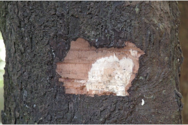
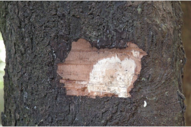
 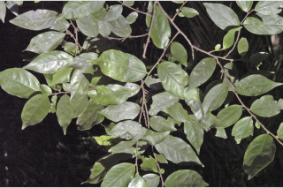
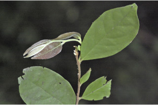
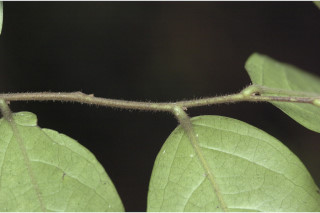
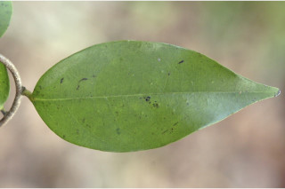
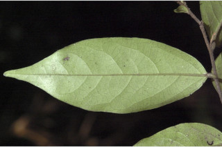
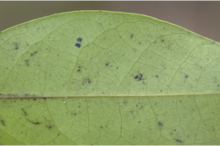
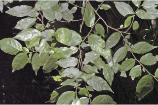
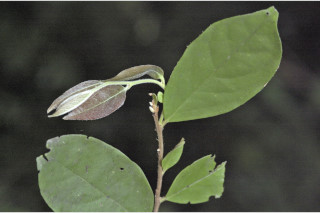
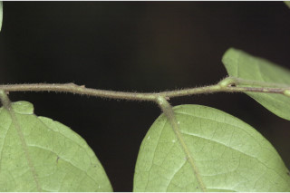
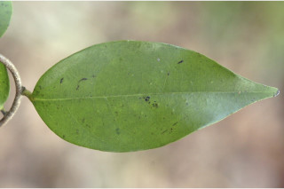
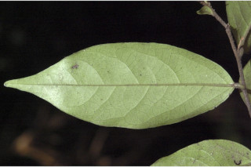
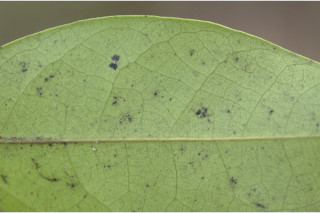